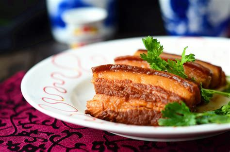
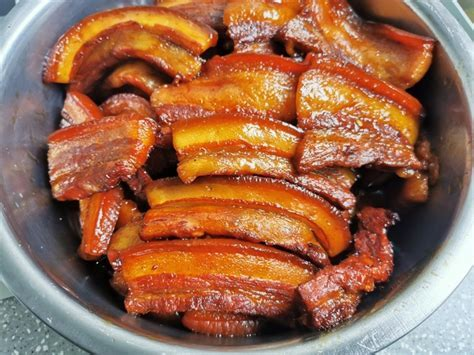

黄金鲁菜系济南把子肉
发布时间: 2023-04-07 4859 次浏览
-
济南把子肉，是山东省传统名菜之一，也是济南市的地方特色小吃。这道菜品由猪肉制成，口感酥脆，肉质鲜嫩，色泽金黄，深受当地人和游客的喜爱。济南把子肉的制作过程非常繁琐，要先选用猪腿肉，去皮去骨，切成长约10厘米、宽约2厘米、厚约0.5厘米的薄片。然后将薄片放在开水中焯一遍，再用冷水冲洗，使其入味不变形。接着，将薄片码在一起，放在锅里用小火烤至表面金黄酥脆。最后，将烤好的把子肉放在盘中，撒上姜末、蒜末、辣椒粉等佐料，配上济南特色的芝麻烧饼，一道美味的济南把子肉就完成了。
据说济南把子肉的历史可以追溯到明朝嘉靖年间，当时在济南市的历城区，有一位姓陈的烤肉摊贩，他做的烤肉非常受欢迎，特别是他用猪腿肉制成的把子肉更是深受食客喜爱。后来，陈姓摊贩的把子肉传承至今，成为了济南市的地方特色小吃。
济南把子肉不仅口味独特，而且有很多营养价值，猪腿肉中富含蛋白质、矿物质和维生素等营养成分，有助于促进人体的生长发育和维护身体健康。此外，济南把子肉的制作工艺独特，采用传统的手工烤制方式，不使用任何添加剂和调味料，更加健康和安全。济南把子肉作为济南地方特色小吃，已经成为了济南市的文化符号之一。在济南的繁华商业街区和传统美食街上，可以看到很多摊贩和餐馆都出售济南把子肉，吸引了无数游客和食客前来品尝。
除了作为小吃，济南把子肉还有着更深层次的文化内涵。它代表了济南市的传统烤肉文化，是当地人的骄傲和自豪。在济南的传统节日和喜庆场合，人们往往会烤制一些把子肉款待亲朋好友，表达对生活的热爱和对传统文化的传承。
总之，济南把子肉不仅是一道美食，更是济南市的文化符号和传统烤肉文化的代表。它通过独特的制作工艺和口感，吸引了无数游客和食客前来品尝，也成为了济南市的骄傲和自豪。
黄河文化旅游宣传平台
联系电话: 17753010787
版权所有：山东大学技术团队
技术支持：山东大学技术团队